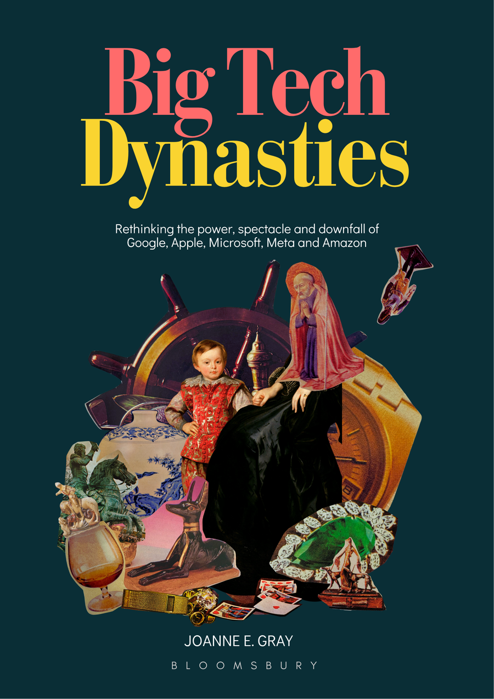

How technological dependence becomes private governing power, and how democracies can govern it.
My research examines how technological dependencies enable private companies to exercise governing power, and how governments can develop the capacity to govern rapidly evolving digital technologies in the public interest.
I study this across four connected areas: how Big Tech exercises private governing power; how dependence on AI infrastructure shapes digital sovereignty and a state's capacity to govern; how platforms are regulated; and how emerging technologies such as smart glasses and extended reality can be governed before harms become entrenched.
My work has informed Australia's social media minimum age legislation and is cited by regulators including the eSafety Commissioner and the ACCC.
Background
I'm an Associate Professor and Chair of Discipline for Media & Communications at The University of Sydney, Editor-in-Chief of the Q1 journal Policy & Internet, and Lead Chief Investigator of the ARC Discovery Project Governing Immersive Tech. I am the author of Google Rules (Oxford University Press, 2020) and Big Tech Dynasties (Bloomsbury, 2027), and co-author of Governing Social Virtual Reality (Palgrave Macmillan, 2024).
I completed my doctoral thesis under the supervision of Professor Brian Fitzgerald, a pioneer of internet law in Australia, and my postdoctoral research fellowship with Professor Nicolas Suzor, a global leader in platform governance studies. In addition to my PhD, I hold a Master of International Law and Bachelor of Commerce (First Class Honours, Political Economy).
For more about me visit LinkedIn → or my University of Sydney profile →

Big Tech Dynasties
Rethinking the power, spectacle and downfall of Google, Apple, Microsoft, Meta and Amazon
Big Tech Dynasties (Bloomsbury, 2027) offers a new way of understanding the power of Apple, Amazon, Google, Meta, and Microsoft. The book argues that while each company may be a product of platform capitalism, they are also historically familiar.
Big Tech is familiar, because it is dynastic. And because it is dynastic, Big Tech is inherently undemocratic. Big Tech Dynasties considers how we arrived at this moment and the threat to democracy posed by concentrated private power. The book also explains how democracies are beginning—unevenly and imperfectly—to push back, drawing particular attention to Australia's emergence as an unlikely leader in democratic oversight of Big Tech.
About the book Pre-order · February 2027My research examines how the power of global technology companies is exercised, and how democracies can govern it.
I focus on how law, policy, design, economic structures and infrastructure interact, and on how public-interest governance can respond to concentrated digital power. My work combines legal analysis, political economy, media studies and empirical digital research, and is widely cited in academic, policy and public debates.
Big Tech & Private Governing Power
How Google, Apple, Microsoft, Meta and Amazon came to set the rules for markets, information and public life, and what this means for democracy. This work runs from Google Rules to Big Tech Dynasties.
Digital Sovereignty & AI Infrastructure
How dependence on global cloud, compute, data centres and AI models affects a country's capacity to govern, and how Australia and the Asia Pacific can build sovereign governing capacity. Read more →
Platform Governance & Regulation
How platforms are governed and how they govern: content moderation, algorithmic systems, competition, copyright and online safety regulation, including research that has informed Australian regulators and legislation.
Emerging Technologies, Privacy & Online Safety
Proactive governance of immersive and wearable technologies before harms become entrenched, including research on smart glasses, covert recording and gendered harassment through the ARC Governing Immersive Tech project. Read more →
Research & Writing
My research has been published in leading academic journals and reaches diverse audiences through policy briefs, media commentary, and public scholarship. I combine rigorous academic analysis with accessible communication to inform public debate and policy development.
Books
- Big Tech Dynasties: Rethinking the Power, Spectacle, and Downfall of Google, Apple, Microsoft, Meta, and Amazon (Bloomsbury, 2027)
- The Limits of Immersion: Disability and Virtual Reality, with Egliston, Carter, Clark, Goggin, Zhuang and Tan (Bristol University Press, forthcoming)
- Governing Social Virtual Reality: Preparing for the Content, Conduct and Design Challenges of Immersive Social Media, with Carter and Egliston (Palgrave Macmillan, 2024)
- Google Rules: The History and Future of Copyright Under the Influence of Google (Oxford University Press, 2020)
Research projects
- Governing Immersive Tech: Proactive harm prevention for virtual and augmented reality technologies. ARC Discovery Project DP250100343 (2025–2028), Lead Chief Investigator
- The For You Project: Australian Experiences of Algorithmic Culture on TikTok. ARC Discovery Project (2024–2027), Chief Investigator (platform governance)
- Asia Pacific Digital Sovereignty Collective: a regional research network on digital sovereignty, AI and critical digital infrastructure, co-founder and co-lead
Selected articles
- Wang, Y. & Gray, J. E. (2022). China's evolving stance against tech monopolies: A moment of international alignment in an era of digital sovereignty. Media International Australia.
- Bay, M. & Gray, J. E. (2026). Big tech trajectories: A layer-model approach to extensions of platform power in the emerging XR economy. Internet Policy Review.
- Hutchinson, J., Stilinovic, M. & Gray, J. E. (2024). Data sovereignty: The next frontier for internet policy? Policy & Internet.
- Gray, J. E. & Tang, W. (2025). The Chinese metaverse: An analysis of China's policy agenda for extended reality (XR). Policy & Internet.
- Gray, J. E. (2021). The geopolitics of 'platforms': The TikTok challenge. Internet Policy Review.
- Gray, J. E. & Witt, A. (2021). A feminist data ethics of care for machine learning: The what, why, who and how. First Monday.
Policy impact
- Research on smart glasses and covert recording cited by the Commonwealth Attorney-General in parliamentary Question Time, and briefed to federal and state policymakers (findings)
- Co-authored submission cited in the government report that preceded Australia's social media minimum age legislation
- Research cited by the eSafety Commissioner, the ACCC and the OECD
- Advised Meta, ByteDance, Microsoft and YouTube on platform governance, including work that led YouTube to remove medical misinformation during the COVID-19 pandemic
- $1.49 million in research funding secured since 2018
For research publications visit Google Scholar → or ORCID →
For commentary visit The Conversation →
For general musings visit Medium →
Making complex technologies understandable
I speak and advise on Big Tech, digital sovereignty, AI governance and emerging technology policy for government, industry, civil society and public audiences. When you work with me you get:
- Academic rigour combined with practical relevance
- Deep interdisciplinary expertise across law, policy, economics, media, and communication
- Clear, engaging communication for technical and non-technical audiences
- Experience working with government, industry, and civil society
- A trusted public voice on digital society issues
Get in Touch
For media, speaking and advisory enquiries, get in touch via jo@bordenmgmt.com